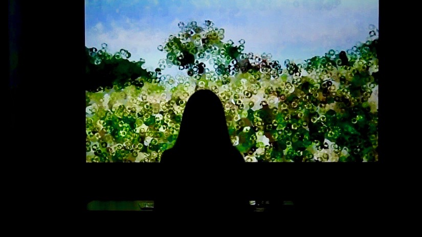

"Come home to me."
The homeland(s) where we grew up in is the place where we had our memorable moments of first times in life. Therefore, it is the source where our power and strength come from. As we grow we become stronger, and eventually most of the people will leave their homeland and start of the journey somewhere new.
Generation after generation, people absorbed its nutrition, left, and most of them never came back.
But our homeland needs our attention and love too. They are gradually becoming devitalized, and will decay and never be able to flourish new generations like before anymore, unless people who grew up in and left them can find a way to come home and give back their love and energy to the land.
"Come home to me." intends to give people an aesthetic and intuitive interactive experience of how their presence, attention, and love could change their homeland significantly. The projected view will change as the participant approach and leave.